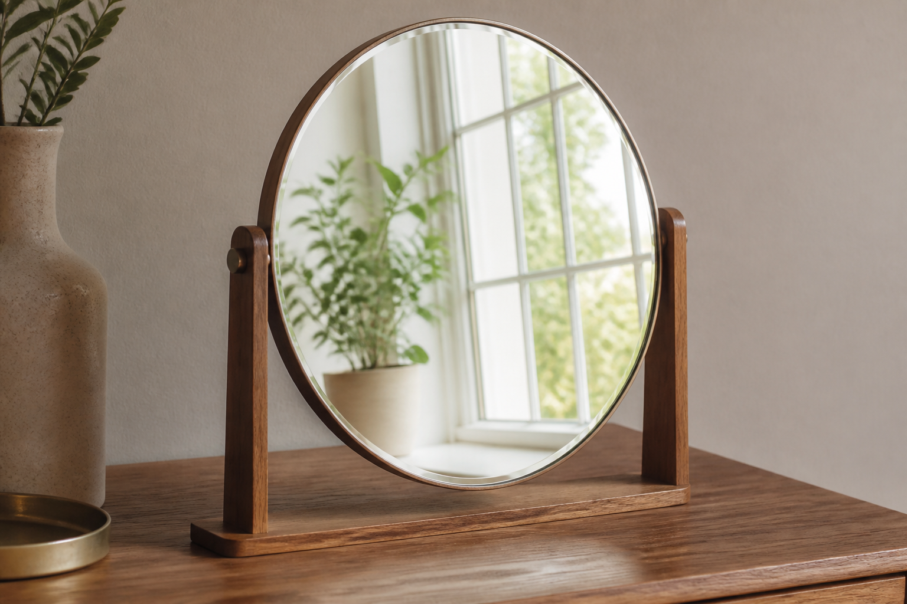

🗂️ 主選單
🪞
光線特勤隊
任務二
光碰鏡子，彈回來！
一頁直達：搶答・闖關・課本簡報 ｜ 光的反射
⭐ 本課重點體驗

🎭 光的反射舞臺
拖角度看入射角＝反射角，切鏡面↔粗糙面，光線偵探破謎
電影感臨場舞臺・素養五段故事線・老師帶課稿＋SEL・🔵🟠雙軌
🎯 上課一鍵直達
🎲
大富翁闖關
擲骰子・機會命運・答題賺金幣
全新自製
🏎️
賽車搶答
雙隊競速・衝線灑花・中英文發音
全新自製
🖥️
課本簡報
Google 簡報・光的反射 p79
🙋
Baamboozle 搶答
10題・全班同螢幕搶答・代碼 4759426
📸 真實照片・點一點體驗
📸 真實照片體驗館
湖面倒影・鏡子・後照鏡・水坑・湯匙 👆 點照片聽名字＋音效
看真實的光反射，讓學生「有感覺」
🔬 名詞看得見・互動實驗
📐
反射定律實驗
拖角度→入射光・法線・反射光現形，入射角＝反射角當場相等
🪞
鏡面 vs 漫反射
切換平滑↔粗糙面，看光整齊反射／四散亂彈，名詞可點會發音
📝 學習單（最後發・可列印）
📝
光的反射・學習單
🔵貼/圈 🟠因果句・含真實照片・一鍵列印／存PDF・附教師解答
🧭 任務導覽
🔦 任務一・光與影子
🪞 任務二・光的反射
🌈 任務三・光與顏色